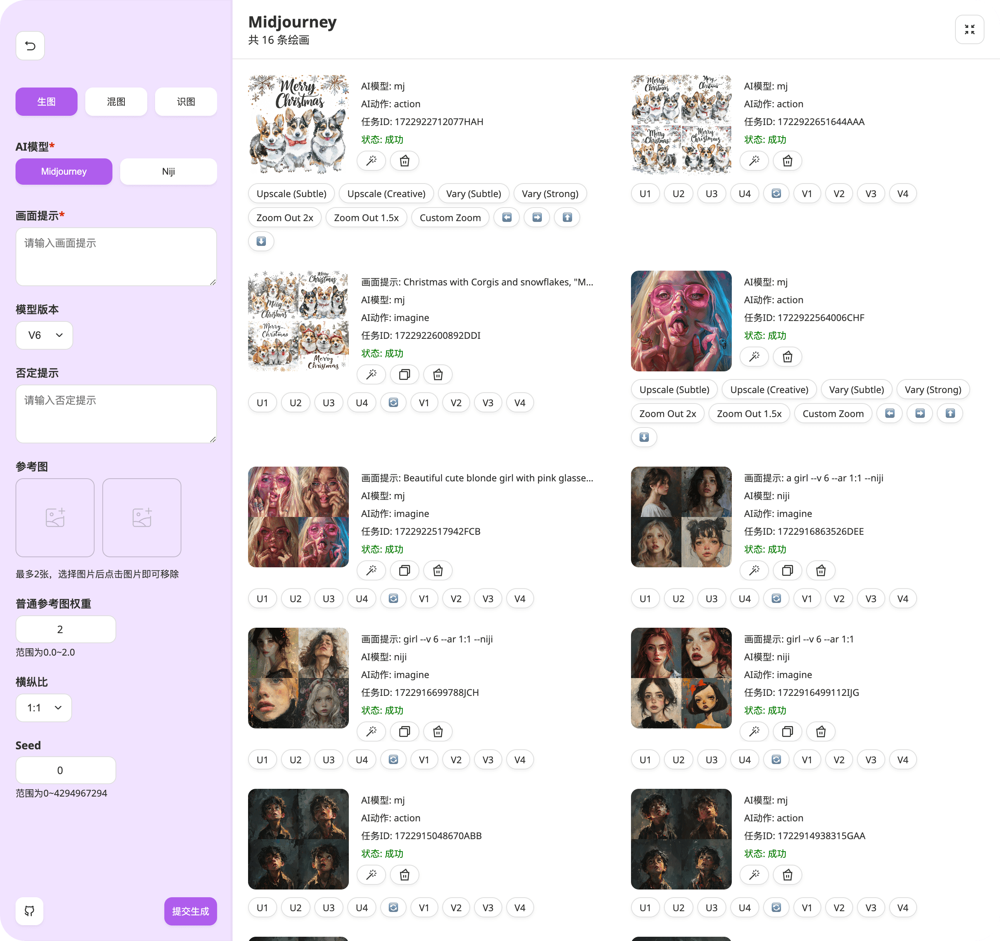
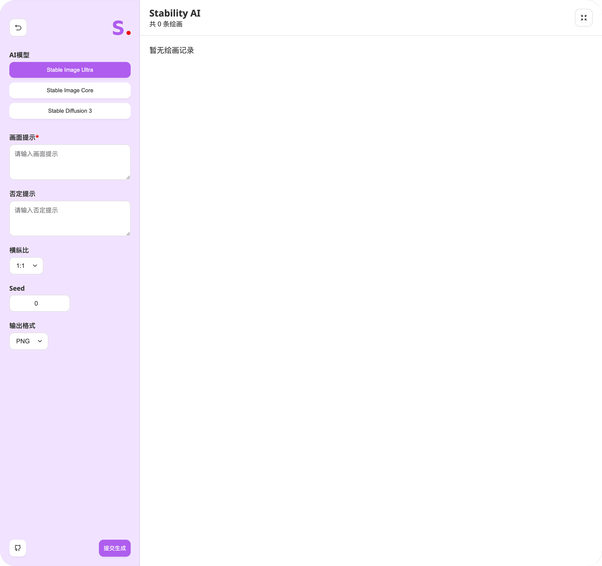

Chatgpt-Midjourney
 项目首页
项目首页
ChatGPT-Midjourney 是一个集成了多种人工智能技术的网页服务框架，包括 ChatGPT 的聊天机器人、StabilityAI 的稳定扩散算法以及 Midjourney 的图像生成工具,还拓展了更多的应用场景，如AI绘画、AI音乐创作、AI视频制作、AI生成PPT等功能。


 如何部署在线 ChatGPT-Midjourney
如何部署在线 ChatGPT-Midjourney
什么是 ChatGPT-Midjourney
- ChatGPT-Midjourney 是一个基于 ChatGPT-Next-Web 开发的开源项目，它不仅继承了原项目的所有功能，还加入了 Midjourney 的图像生成和操作能力，以及 StabilityAI 的支持。用户可以通过简单的部署，快速拥有一个功能全面的 AI 创作平台。
功能列表
- AI 对话: 支持自然语言处理，提供智能对话体验。
- AI 绘画: 支持 Midjourney 图像生成和操作，如 Imgine、Upscale、Variation 等。
- AI 音乐: 支持 AI 生成音乐，丰富创作内容。
- AI 视频: 支持 AI 生成视频，扩展创作领域。
- AI 生成 PPT: 支持 AI 生成演示文稿，提高工作效率。
- PDF 解析对话: 支持 PDF 文档解析，实现智能对话。